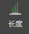
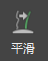
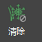

有四种用于所有修饰笔刷的公用属性。所有笔刷共享公用属性的值。例如，如果选择“长度”(Length)笔刷，然后将“间距”(Spacing)设置为 2，则该值也用于“姿势”(Pose)和“弯曲”(Bend)笔刷。
创建一个新的笔刷笔划之前，设置笔刷在多边形曲面上移动的距离。
设置笔刷笔划衰减为无效果的方式。您可以为“衰减”(Falloff)选择“高斯”(Gauss)、“平滑”(Smooth)、“线性”(Linear)或“冲量”(Impulse)分布。
设定笔刷笔划应用于遮罩内的基本体还是遮罩外的基本体。

设置样条线的长度，而不修改其形状。
设置请求值中的量以更改每个笔划长度。
将量设置为样条线的增加值或目标长度。
调整样条线的宽度，而不修改其形状。
设置每个笔划的样条线宽度增量。
将量设置为样条线的增加值或目标宽度。
控制在笔刷笔划的方向上样条线的方向和弯曲。
设置修改样条线的方向的量。
设置修改基本体弯曲的量。
将基本体的方向控制为笔刷笔划的方向，而不修改弯曲。
设置修改基本体方向的量。
控制基本体在笔刷笔划方向上的弯曲，而不修改方向。
设置修改基本体弯曲的量。
将样条线从曲面抬起，然后朝向或远离曲面法线，而不修改形状。
对每个笔刷笔划旋转样条线的度数和方向。
设置曲面上的目标角度以旋转该样条线。
将笔刷半径中的头发拉向笔刷半径最中心的样条线。这样可以同时更改受影响的样条线的形状和长度。
指示目标/轴样条线是否应因笔划朝下事件或沿移动笔刷的中心浮动而锁定
设置朝目标样条线移动每个样条线的数量。
将样条线推离笔刷半径的中心。通过旋转完成，因此可以保留样条线的形状。
设置从笔刷中心排斥样条线的量。
将样条线推离笔刷绘制的不可见线。通过旋转完成，因此可以保留样条线的形状。
设置从线旋转样条线的量。
为样条线应用噪波，以抖动其外观。
设置应用于样条线中点的空间噪波量。不保持样条线长度。
设置应用于样条线端点的空间噪波量。不保持样条线长度。
设置法线处样条线宽度。
设置远离法线旋转该样条线的最大角度。
设置围绕法线旋转该样条线的最大角度。
设置围绕第一段旋转该样条线的最大角度。
围绕笔刷半径的中心扭曲样条线。
设置扭曲每个笔划样条线的度数。

通过将笔刷中的样条线的形状与半径中的所有样条线的平均形状融合，平滑这些样条线。设置朝平均值平滑样条线的量。
设置修改样条线的方向的量。
设置修改样条线弯曲的量。
设置笔刷定义的区域的颜色。
可以将遮罩绘制到样条线上。遮罩控制所有其他笔刷操作，以便它们只应用于遮罩内部或遮罩外部。该遮罩的值显示为绿色。较暗的样条线具有较低的遮罩值，更亮的绿色样条线具有更高的值。单击  图标以从描述删除遮罩。
设置要添加到样条线的遮罩值的量。负值会减小遮罩效果，最终可以从遮罩删除样条线。
删除笔刷集半径中样条线的“长度”(Length)、“方向”(Orientation)和“弯曲”(Bend)笔划。
设置还原每个笔划长度的量。
设置还原每个笔划方向的量。
设置还原每个笔划弯曲的量。这也将还原分段长（如“弯曲参数”(Bend Param)）。